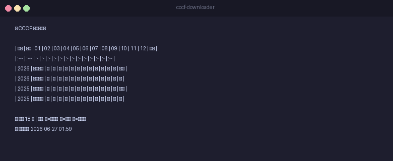

自动下载《计算》+《快讯》双版本，单期 PDF 约 40-120MB
Markdown + Excel 双格式，每年分《计算》《快讯》两行独立展示
--update 自动扫描跟踪表，检测所有缺期并一键补全
配置 crontab / 任务计划程序，每月 22 号自动下载最新一期
Windows · Linux · macOS 三平台均可运行，Python 3.6+ 即可
一次登录，60 天有效。过期后执行 --login 即可更新

cccf_download.py --list 查看下载跟踪表每年分《计算》和《快讯》两行，独立展示每期下载状态：
| 年份 | 类型 | 01 | 02 | 03 | 04 | 05 | 06 | 07 | 08 | 09 | 10 | 11 | 12 | 状态 |
|---|---|---|---|---|---|---|---|---|---|---|---|---|---|---|
| 2026 | 《计算》 | ● | ● | ● | ● | ● | ● | — | — | — | — | — | — | 完整 6/6 |
| 2026 | 《快讯》 | ○ | ○ | ○ | ○ | ○ | ○ | — | — | — | — | — | — | 无快讯 |
| 2025 | 《计算》 | ● | ● | ● | ● | ● | ● | ● | ● | ● | ● | ● | ● | 完整 12/12 |
| 2025 | 《快讯》 | ○ | ○ | ○ | ○ | ○ | ○ | ○ | ○ | ○ | ○ | ○ | ○ | 无快讯 |
git clone https://github.com/tsingke/cccf-downloader-skill.git cd cccf-downloader-skill pip3 install openpyxl # 可选，用于 Excel 导出
python3 cccf_download.py --login
浏览器打开 dl.ccf.org.cn → 登录 → F12 Console → copy(document.cookie) → 粘贴回终端
开始使用！
/cccf 2025 1-12下载 2025 年全年/cccf 2026 1下载第 1 期/cccf update智能更新缺期/cccf list查看跟踪表/cccf login更新 Cookiepython3 cccf_download.py --year 2025 --issues 1-12指定期号python3 cccf_download.py --update智能更新python3 cccf_download.py --list跟踪表python3 cccf_download.py --login登录| 平台 | 配置 |
|---|---|
| macOS / Linux | crontab -e → 3 9 22 * * cd /path && python3 cccf_download.py --update |
| Windows | 任务计划程序 → 每月 22 号 9:00 → python cccf_download.py --update |
~/CCCF_Downloads/ ├── CCCF_2025_01.pdf # 《计算》主刊 ├── CCCF_2025_01_快讯.pdf # 《快讯》简报版（如有） ├── CCCF_2025_02.pdf ├── ... ├── CCCF_下载跟踪表.xlsx # Excel 跟踪表 └── .cccf_tracker.json # 跟踪数据（隐藏）
可通过修改脚本顶部的 OUTPUT_DIR 自定义路径。